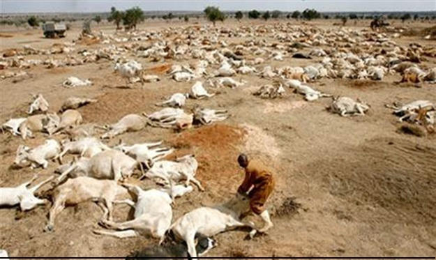
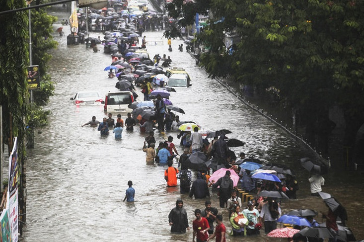
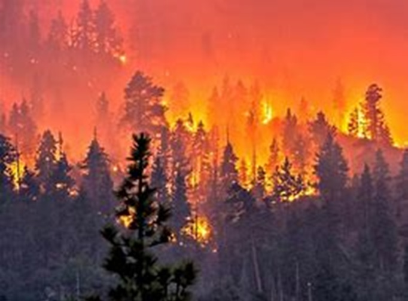
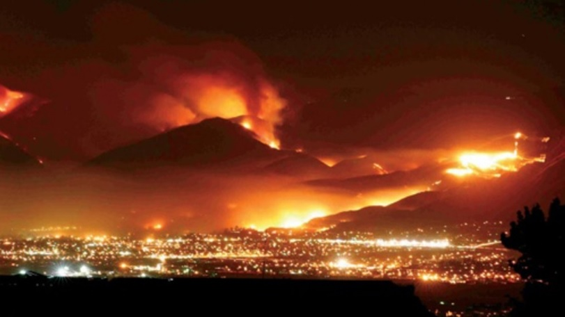
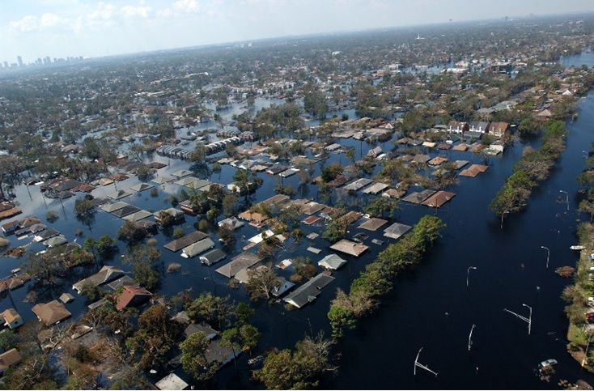
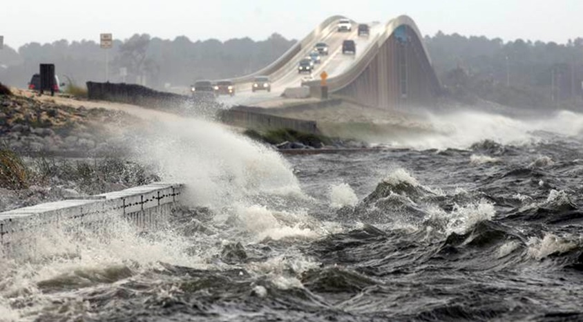
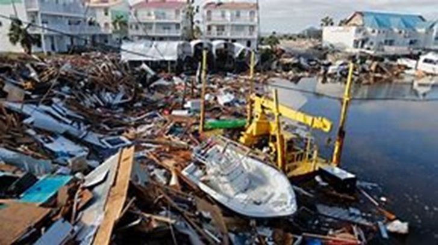

Climate Change and the Effects on Natural Disasters
With increasing temperatures, the possibility of more droughts and increasingly dangerous and violent storms are becoming more and more likely. As more water vapor evaporates into the atmosphere, it becomes like a fuel that powers these storms. The mixture of heat in the atmosphere and the ocean surface becoming warmer makes tropical storms more dangerous with higher wind speeds. This also leads to rising sea-levels which leads to flooding. Between droughts, hurricanes, flooding and high winds over the past decade have been devastating and destructive. Yearly, on average, there are around 400 “extreme weather events”. These disastrous events affect people world-wide, the poor as well as the rich. Since 2017, around 41 million people have been affected by flooding and growing surges and droughts threaten about a fourth of the population world-wide. In 2017 alone, there was Hurricane Irma in the Caribbean, flooding in Southeast Asia, droughts in East Africa, Hurricane Harvey in the Southern US and the heat wave, nicknamed “Lucifer”, that hit India, the Middle East and Europe.
East Africa
Southeast Asia
Wildfires
There have always been periods of drought throughout the years that cause wildfires. However, as temperatures rise, the atmosphere and lands grow more arid in some regions – for example in California. This makes the vegetation dry and more susceptible to flames. As we’ve seen the past few years, places that are in very high fire hazard zones can be caught off guard. Heavy populated areas are especially at risk due to the amount of buildings and people. Over the years, there have been many destructive fires – such as the Camp Fire which caused 86 deaths and over $16.5 billion in losses. In 2018’s wildfire season, we saw one of the worst wildfires in history – with 10 large fires each burning over 500 acres in California. The 2018 fire raised awareness of the severity of this threat and the need to take action – by reducing emissions and better managing forests – and preparing for such disasters. Scientists have been using a computer model FSim – a wildfire simulator – to see what extreme scenarios are possible in a certain environment. It uses data on historical weather patterns along with other variables and with the wildfire season getting longer, fires are becoming more largescale and overall destructive. This technology shows us how it will continue to do so as the years go on and the possibility of what’s to come.
2017
2018
Hurricanes
The Southeastern United States has suffered many hurricanes over the years – some severely destructive. The 2004 hurricane, Charley, was a Category 4, followed by the Category 5, Hurricane Katrina, in 2005. Katrina left $125 billion of damages in Louisiana with over 1,200 deaths. Katrina was one of the most catastrophic tropical storms that we had seen in a very long time. After Katrina, we have seen more frequent extremely violent storms. Hurricane Irma in 2017 – the fourth hurricane of the season – was another destructive Category 5 that struck Florida. With Irma, there were over 130 fatalities. However, in 2018 we experienced a Category 5, Michael, it was the third-most intense Atlantic hurricane to affect the contiguous United States – the first being in 1935 and the second in 1969 – and it was the first hurricane on record to impact the Florida Panhandle. One potential hurricane disaster is the Tampa Bay area. With the growing population, it puts more people at risk if a violent storm is to strike. Over 2,000 people would be at risk of fatal injuries or death – which would be worse than Katrina in 2005. We see clearly the growing intensity of these tropical storms as the years go by. With the rising temperatures, these types of storms are more at risk of reaching Categories 4 or 5, resulting in not only physical damages on the cities hit but also countless fatalities. Rising sea-levels also affect the future to come. Even if the storms are not affected by climate change, with the sea-levels rising they’ll be more likely to cause flooding in certain areas.

Charley 2004
Katrina 2005
Irma 2017
Michael 2018
MAPS
Los Angeles
View Larger Map
Southeastern US
View Larger Map View Larger Map